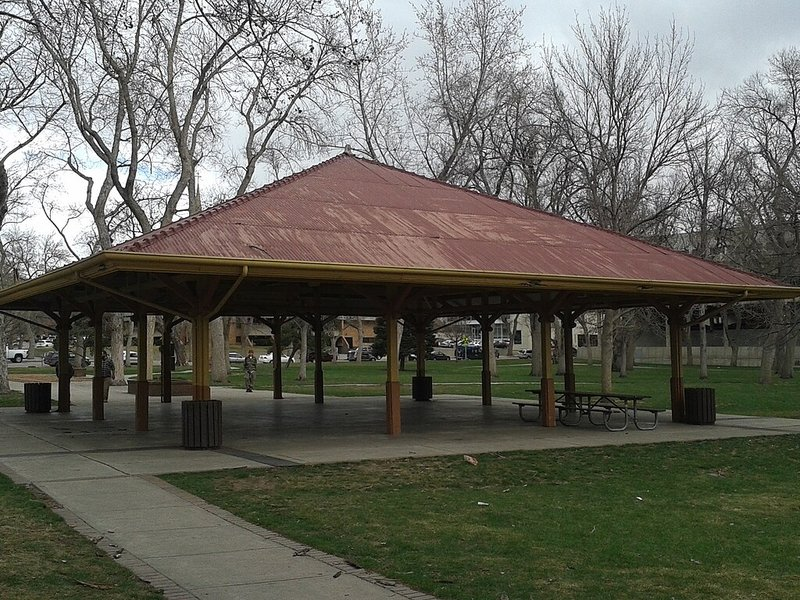

Antlers Park Downtown Dog Park Fenced
- Fenced Yes — large fence with double gates (City)
- Water Yes — dog water station (City)
- Small-dog area Yes — separate small-dog and large-dog play areas (City)
- Hours Not stated on the City dog park page — follow posted park hours
New ADA-accessible dog park built under the Downtown Historic Parks Master Plan; synthetic turf, seating area, and play features.